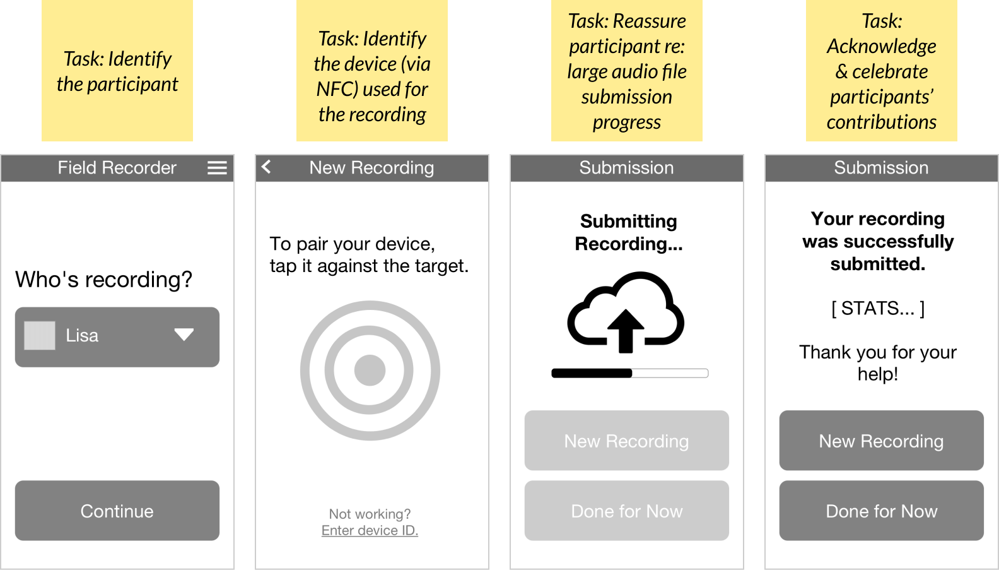

| Project: | Children's Health • Machine Learning • Mobile App |
| Scope: | Design • Prototyping • User Testing |
| Roles: |
|
| Tools: | Sketch • Figma |
| Year: | 2021-2022 |
Vox Pulmini is a start-up focused on improving outcomes in children’s respiratory health.
I designed a mobile app to collect high-quality audio samples from volunteers using a paired physical device. The data trained a machine learning model to recognize critical patterns in patients with chronic respiratory conditions to predict and prevent attacks.
With a low-fi clickable mobile prototype, we tested a physical sample-collection device on volunteers ranging in age from 4 to 82. This helped us optimize the app for ease of use.
I worked with the founder to envision the collection and labeling of thousands of audio samples from volunteer participants, on a shoestring budget.
Unique considerations included how to: package the physical testing device for delivery and return, communicate delay when recording and transmitting large sound files, and incentivize participants to record more sounds. Potential snags for the end-user included multi-user account creation, bluetooth pairing, and device ID matching.
Below are initial wireframes showing a user flow in which an established user records a sound using the testing device.
These evolved into a low-fidelity interactive, clickable prototype. The simple prototype made quick testing possible before committing the design to code. Our main goal was to ensure that instructions were undeniably clear.
Testing prototypes on various age groups for clarity of instructions proved to be incredibly insightful. We found that with our initial screens, many end-users missed their prompts. We were asking them to follow timers while reading instructions, holding the phone in one hand and the device in the other. Simplifying the timed prompts improved results.
Vox Pulmini
Krispin Leydon, Founder
User Experience
Nilpa Jhaveri